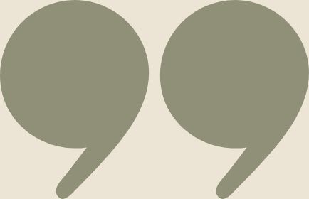
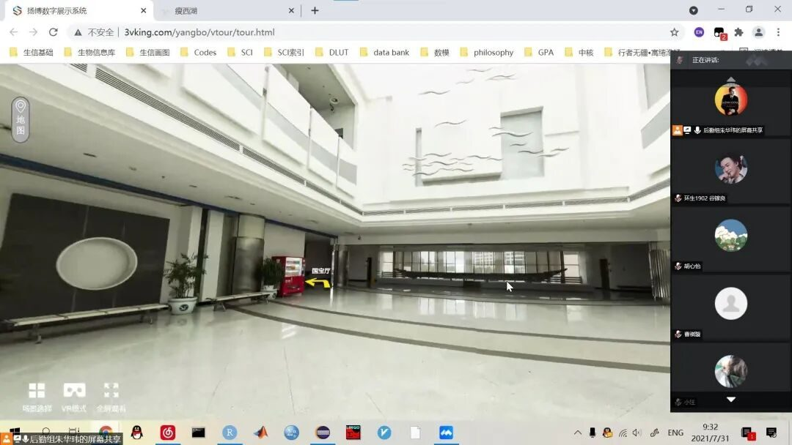
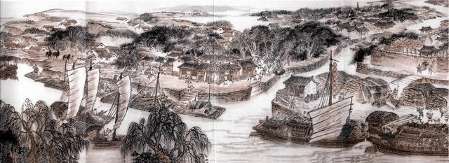
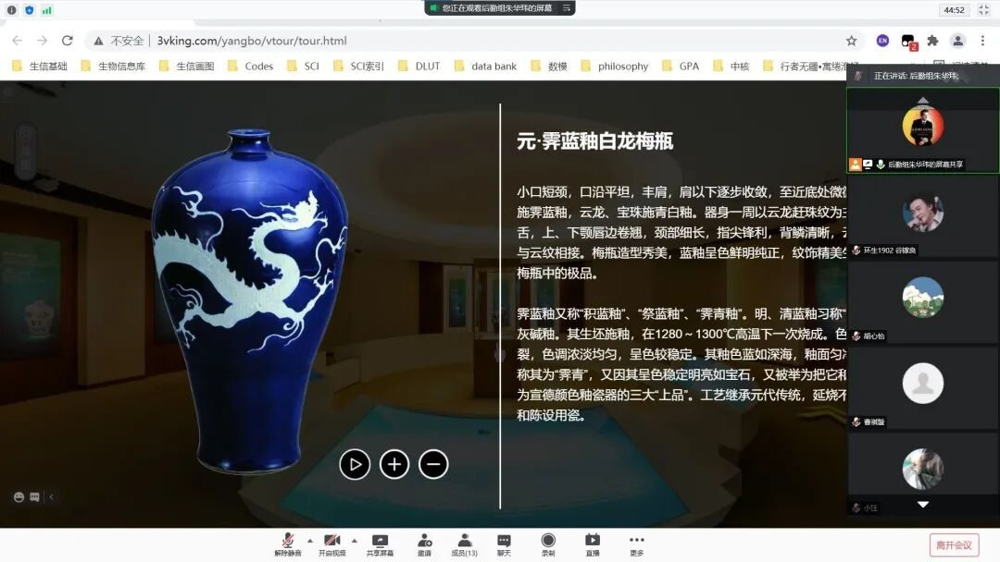
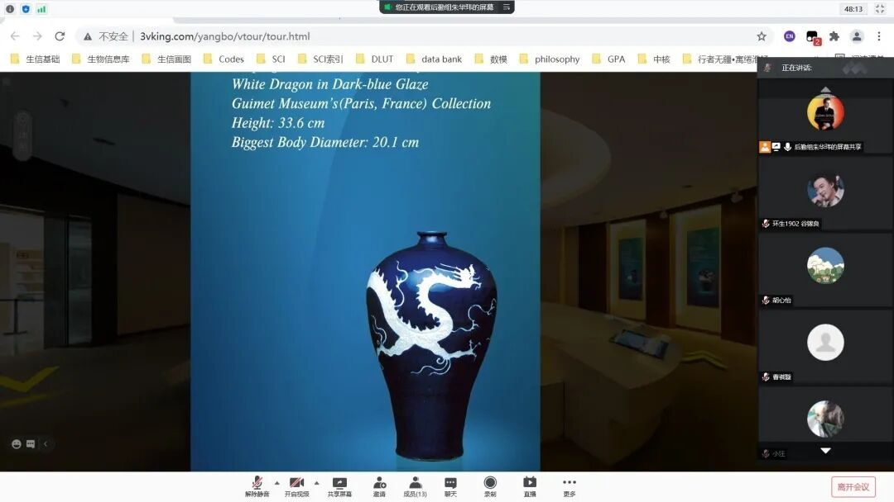
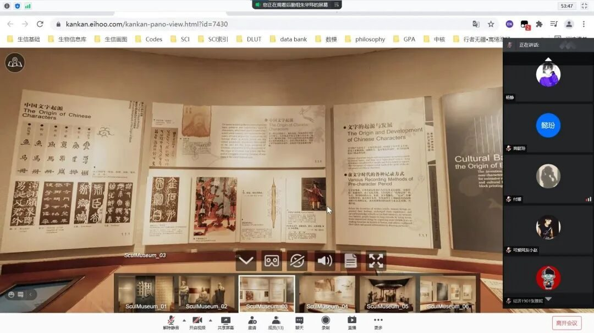

【行者无疆 寓绻淮扬】 绿树城郭，一梦千年
行者无疆 寓绻淮扬
扬州名胜与博物馆

运河的水划破广陵郡千年时光
深埋水底的瓷片记载扬州代代繁华
瘦西湖畔风起花落一梦千年
本期线上调研围绕扬州的千年历史与瘦西湖的风雨变迁，诸位行者齐聚腾讯会议，在线上探访扬州博物馆与瘦西湖。

千年风华•广陵潮
杜牧有诗云：「街垂千步柳，霞映两重城。天碧台阁丽，风凉歌管清。」一诗书尽唐代扬州之繁华。扬州，古称广陵、江都，最早建城的历史在春秋时期。
唐代是扬州城历史上规模最大的时期。依托于通往洛阳的运河，扬州人将江淮地区的粮食与物资源源不断地运往关中。
漕运和商业的发展促使人们在旧城外修筑了庞大的罗城，成为工商业者的聚居区。扬州城也成为唐帝国仅次于长安、洛阳的第三大都市，时有「扬一益二」之称。

千年风华•国宝音
被誉为镇馆之宝的霁蓝釉白龙纹梅瓶是元代的景德镇瓷器，通体施纯净的霁蓝釉，瓶身上一只腾云驾雾的矫健飞龙正追赶一颗火焰宝珠，栩栩如生，足见其工艺精绝。
元代霁蓝釉白龙纹梅瓶存世仅三件而扬州博物馆这件是器型最大、品相最好的。扬州本地不产瓷器，但作为商贸集散地和江南经济中心，大量的瓷器在这里转运、交易，富甲天下的扬州盐商把盐运出去，再把瓷器和木材运回来，全国各处窑址的瓷器在扬州都有出土。
这些精美瓷器的大量出土正是扬州城持续一千多年繁华的侧面表现。


柳绿花红•瘦西湖
瘦西湖本名保障湖。乾隆年间诗人汪沆慕名来到扬州后将其唤作瘦西湖。瘦西湖依一条瘦长的河流建作，由乾隆皇帝的御码头开始，沿湖经过绿杨村，红园，西园曲水，大虹桥，长堤春柳，到达徐园，小金山，钓鱼台，白塔，五亭桥等一直往北，湖长十里。
在清代康乾时期瘦西湖已形成基本格局，乾隆年间，扬州的盐业兴盛，瘦西湖由于年长日久，湖心淤塞，盐商便出资疏浚，并在东西岸兴建起许多亭台楼阁，有“园林之盛，甲于天下”之誉。
瘦西湖的景色妩媚多姿，尤其春色降临时，漫步湖畔，三步一柳，五步一花，杨柳绿齐，樱桃红破，便觉舒卷飘逸，顿生诗情画意。
SUMMER
唐代李绅夜宿扬州时曾叹「今日市朝风俗变，不须开口问迷楼。」如今我们探访扬州也怀有同样的心情。
扬州城昔日繁华我们已无法得见，但属于扬州城的独特魅力仍藏在这里的街头巷尾，其丰厚历史文化依然吸引着诸多游人前来一探究竟。

瘦西湖的园桥长亭
与绿树城郭的百年同风雨
岁月洗礼过的瓦砾瓷片
倚扬州城的盛世共繁华

来源 | 行者无疆实践团
文字 | 胡心怡
编辑 | 赵庭芳
审核 | 付媛 吕丰元 温兆琪